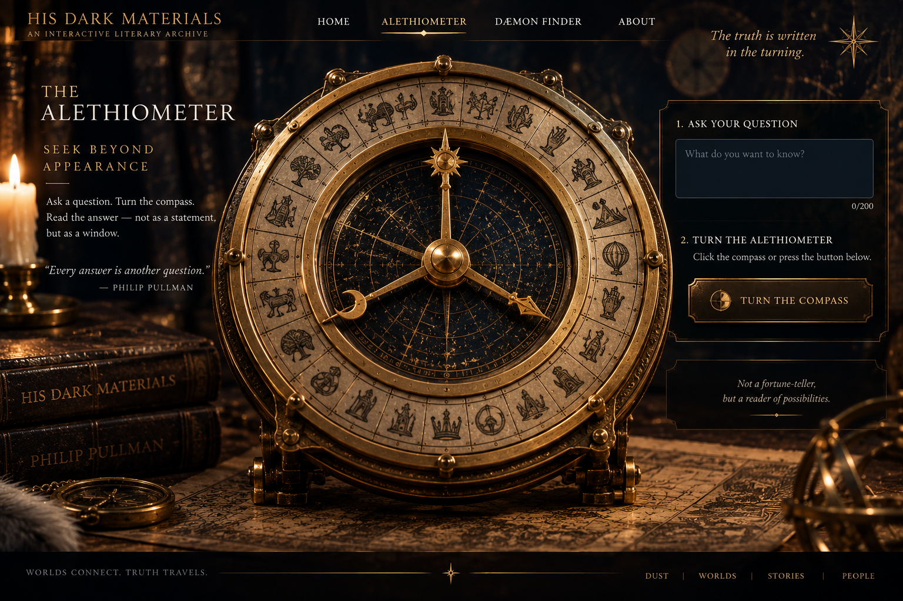

THE
ALETHIOMETER
ALETHIOMETER
SEEK BEYOND
APPEARANCE
Ask a question. Set the instrument in motion. Read the symbols — not as a statement, but as a window.
Every answer opens another question.
← RETURN TO ARCHIVE
Ask a question. Set the instrument in motion. Read the symbols — not as a statement, but as a window.
Every answer opens another question.
← RETURN TO ARCHIVE